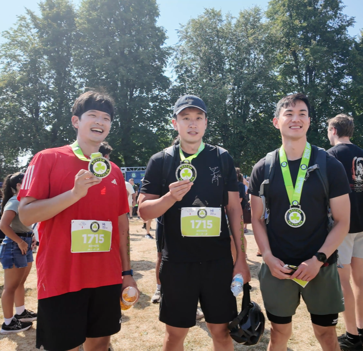

Intae Moon
Hello! My name is Intae (pronounced IN-teh) and I'm a postdoctoral research fellow at Harvard Medical School, Department of Biomedical Informatics, advised by Professor Marinka Zitnik. I completed my PhD in Electrical Engineering and Computer Science at the Massachusetts Institute of Technology (MIT) in 2024. I was advised by Professor Alexander Gusev at the Dana-Farber Cancer Institute and Professor Marzyeh Ghassemi at CSAIL, MIT. For my master's thesis, I was advised by Professor David Perreault at the MIT Research Laboratory of Electronics (RLE), where I worked on electrical energy conversion and control. I received my B.S. in Electrical and Computer Engineering from the University of Illinois, Urbana-Champaign.
My research lies at the intersection of medicine and AI, focusing on harnessing the depth of multimodal biomedical data to inform evidence-based and actionable clinical decision support.

Updates
- : I co-authored a science book on AI for a general audience, AI 내부자들 (link, in Korean), where I wrote the chapter on AI and cancer. I also gave a seminar on this topic (YouTube — English audio available).
- : I'm excited to announce that I have started my postdoctoral research fellowship at Harvard Medical School, Department of Biomedical Informatics, advised by Professor Marinka Zitnik.
- : I'm excited to share that I've successfully defended my PhD thesis, titled "Reliable and Trustworthy AI for Evidence-based Clinical Decision Support in Cancer Care". Check out the presentation recording here.
- : I presented our recent work titled "Robust and fair time-to-event framework for predicting cancer-associated Venous Thromboembolism (VTE) using routinely-collected clinical and panel-sequencing data" at American Society of Human Genetics (ASHG) 2023 in Washington DC! See our extended abstract and poster below.
- : I’m excited to share that our work Machine learning for genetics-based classification and treatment response prediction in cancer of unknown primary has been published in Nature Medicine!
- : I’m happy to announce that I will be presenting our recent work SurvLatent ODE (see paper and poster) as a poster at Symposium on Artificial Intelligence for Learning Health Systems (SAIL) conference in Puerto Rico!
- : I’m excited to share our work "Utilizing Electronic Health Records (EHR) and Tumor Panel Sequencing to Demystify Prognosis of Cancer of Unknown Primary (CUP) patients". See here for the pre-print.
- : I’m excited to announce that I've been selected as a predoctoral semifinalist for the 2022 Charles J. Epstein Trainee Awards for Excellence in Human Genetics Research, presented by the American Society of Human Genetics (ASHG). 60 semifinalist and 18 finalist were chosen among over 700 applicants.
- : I’m excited to share that I won the 2022 Carlton E. Tucker Award for teaching excellence, thanks to the fantastic teaching staff and students of Machine Learning for Healthcare at MIT. All teaching materials are available at this link.
- : I’m excited to announce that I'll be working with Google Health AI team over Summer (full-time) and Fall 2022 (part-time).
- : I’ll be presenting "Utilizing Electronic Health Records (EHR) and Tumor Panel Sequencing to Demystify Prognosis of Cancer of Unknown Primary (CUP) patients" in the poster session (5/23/22) at Symposium on Artificial Intelligence for Learning Health Systems (SAIL). We'll post the pre-print soon.
- : I’m excited to share our work on a new generative, Neural ODE based time-to-event model for longitudinal data with competing risks, SurvLatent ODE. See here for the pre-print.
Selected Publications
Please see my Google Scholar page for a full list of my publications.
-
From predictions to error-controlled decisions: towards actionable foundation models in medicine
Ying Jin*, , and Marinka Zitnik
*co-first authors
2025 — Manuscript to be released soon. Poster: DBMI Science Day [poster]
-
Multimodal AI predicts clinical outcomes of drug combinations from preclinical data
Yepeng Huang, Xiaorui Su, Varun Ullanat, , Ivy Liang, Lindsay Clegg, Damilola Olabode, Ruthie Johnson, Nicholas Ho, Megan Gibbs, Alexander Gusev, Bino John, Marinka Zitnik
arXiv, 2025: [manuscript]
-
Generalizable AI predicts immunotherapy outcomes across cancers and treatments
Wanxiang Shen, Thinh H. Nguyen, Michelle M. Li, Yepeng Huang, , Nitya Nair, Daniel Marbach, Marinka Zitnik
medRxiv, 2025: [manuscript]
-
Reliable and Trustworthy AI for Evidence-based Clinical Decision Support in Cancer Care
PhD thesis, Massachusetts Institute of Technology, 2024: [link]
-
Robust and fair time-to-event framework for predicting cancer-associated Venous Thromboembolism (VTE) using routinely-collected clinical and panel-sequencing data
, Hyewon Jeong, Alexander Gusev, and Marzyeh Ghassemi
American Society of Human Genetics (ASHG), 2023: [extended abstract], [poster]
-
Machine learning for genetics-based classification and treatment response prediction in cancer of unknown primary
, Jaclyn LoPiccolo, Sylvan C. Baca, Lynette M. Sholl, Kenneth L. Kehl, Michael J. Hassett, David Liu, Deborah Schrag, and Alexander Gusev
Nature Medicine, 2023: [manuscript], [codes]
Featured on MIT News and DFCI News!
We have also published a Research Briefing in Nature Medicine.
-
SurvLatent ODE: A Neural ODE based time-to-event model with competing risks for longitudinal data improves cancer-associated Venous Thromboembolism (VTE) prediction
, Stefan Groha, and Alexander Gusev
Proceedings of Machine Learning Research (PMLR), Machine Learning for Healthcare 2022:
-
Utilizing Electronic Health Records (EHR) and Tumor Panel Sequencing to Demystify Prognosis of Cancer of Unknown Primary (CUP) patients
, Sylvan C. Baca, Kenneth L. Kehl, and Alexander Gusev
Symposium on Artificial Intelligence for Learning Health Systems (SAIL), 2022: [abstract]
-
A high-performance 65 w universal ac-dc converter using a variable-inverter-rectifier-transformer with improved step-down capability
, Mike K. Ranjram, Sombuddha Chakraborty, and David J. Perreault
IEEE Energy Conversion Congress and Exposition (ECCE) 2019: [paper link]
-
A wide operating range converter using a variable-inverter-rectifier-transformer with improved step-down capability
, Mike K. Ranjram, Sombuddha Chakraborty, and David J. Perreault
IEEE Applied Power Electronics Conference and Exposition (APEC) 2019: [paper link]
-
Variable-inverter-rectifier-transformer: A hybrid electronic and magnetic structure enabling adjustable high step-down conversion ratios
Mike K. Ranjram, , and David J. Perreault
IEEE Transactions on Power Electronics 2018: [paper link]
-
Design and implementation of a 1.3 kW, 7-level flying capacitor multilevel AC-DC converter with power factor correction
, Carl F Haken, Erik K Saathoff, Ethan Bian, Yutian Lei, Shibin Qin, Derek Chou, Steven Sedig, Won Ho Chung, and Robert CN Pilawa-Podgurski
IEEE Applied Power Electronics Conference and Exposition (APEC) 2017: [paper link]
Teaching
- In Spring 2022, I taught 6.871 : Machine Learning for Healthcare at MIT as a teaching assistant. I created weekly recitation content and developed Python-based problem sets, in order to improve students' understanding of real-world healthcare applications of machine learning. I also coordinated collaborations between clinical researchers from MIT and Harvard, and students for course projects, and provided mentorship on student projects, leading to notable publications. I received the Carlton E. Tucker Award for Teaching Excellence (overall instructor rating: 6.8/7.0).
- In Spring 2019, I was a TA for 6.004 : Computation Structures at MIT. I helped design and build new laboratory assignments and course materials in a RISC-V assembly and hardware description language called Bluespec.
Awards
-
Charles J. Epstein Trainee Awards for Excellence in Human Genetics Research
Location: American Society of Human Genetics (ASHG), Los Angeles, CA, August 2022
Details: Predoctoral semifinalist; chosen as one of the 60 semi-finalists out of over 700 applicants. -
Carlton E. Tucker Award for Teaching Excellence
Location: MIT Electrical Engineering and Computer Science, Cambridge, MA, June 2022
Details: Annual department teaching award. -
Best Innovation Award
Location: IEEE International Future Energy Challenge, National Taiwan University, Taipei, Taiwan, July 2016
Details: Team Leader; led the team of undergraduate students to design and build a successful 1.3 kW power converter for an efficient data center power delivery architecture.
Outside the lab
After spending my PhD and postdoc years in the Boston area, I’ve fully transitioned into a stereotypical New Englander: I now willingly go outside even when the weather is actively trying to harm me.
Some recent events I’ve completed:
- B.A.A. 10K — date:
- Cambridge Half Marathon — date:
- Boston Triathlon Relay — date: 
- Charlie Card Challenge — date: — a footrace against the famous Green Line.
- Ocean State Rhode Races (Marathon) — date:
— finish: 3:41:20

Skiing
Writing & Media
I’ve also been writing — I co-authored a science book on AI for a general audience with fellow researchers. I wrote the chapter on AI and medicine (in Korean). Book link: https://product.kyobobook.co.kr/detail/S000217510875. I also gave a seminar about this topic via The Miilk — YouTube link (English audio available).
And for fun, I’ve appeared in a few YouTube / TV videos talking about PhD life in Boston, and also gave an MIT campus tour:
- PhD Life in Boston
- PhD Life in Boston #2 (English audio available)
- TBA — MIT Campus Tour